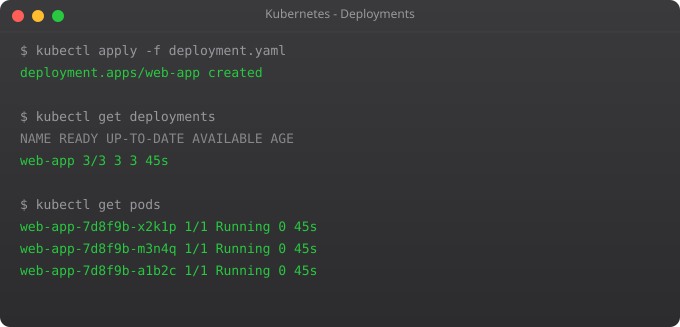

Running a single pod directly is fine for testing, but in production you never do that. If a pod crashes, it stays dead. Deployments solve this by maintaining the desired number of running pods automatically.
apiVersion: apps/v1
kind: Deployment
metadata:
name: web-app
spec:
replicas: 3
selector:
matchLabels:
app: web
template:
metadata:
labels:
app: web
spec:
containers:
- name: web
image: nginx:1.25
ports:
- containerPort: 80
resources:
requests:
cpu: 100m
memory: 128Mikubectl apply -f deployment.yaml
kubectl get deployments
kubectl scale deployment web-app --replicas=5
# Watch self-healing
kubectl delete pod web-app-xyz # Replacement appears automatically
kubectl get pods -wkubectl set image deployment/web-app web=nginx:1.26
kubectl rollout status deployment/web-app
kubectl rollout undo deployment/web-app # If something goes wrongIn Part 4, we will learn about Services — how to expose your Deployments so they can receive traffic.
← Back to Blog